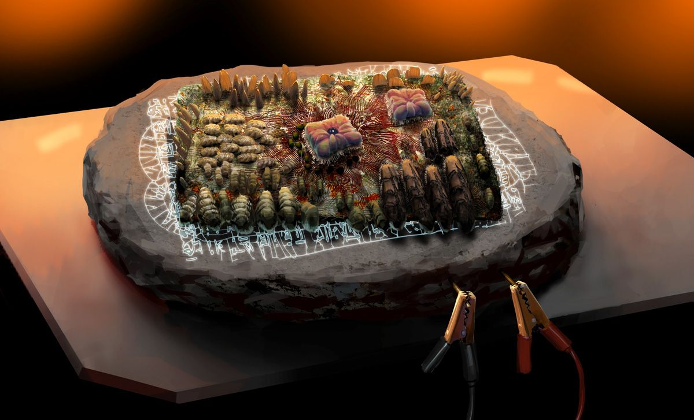
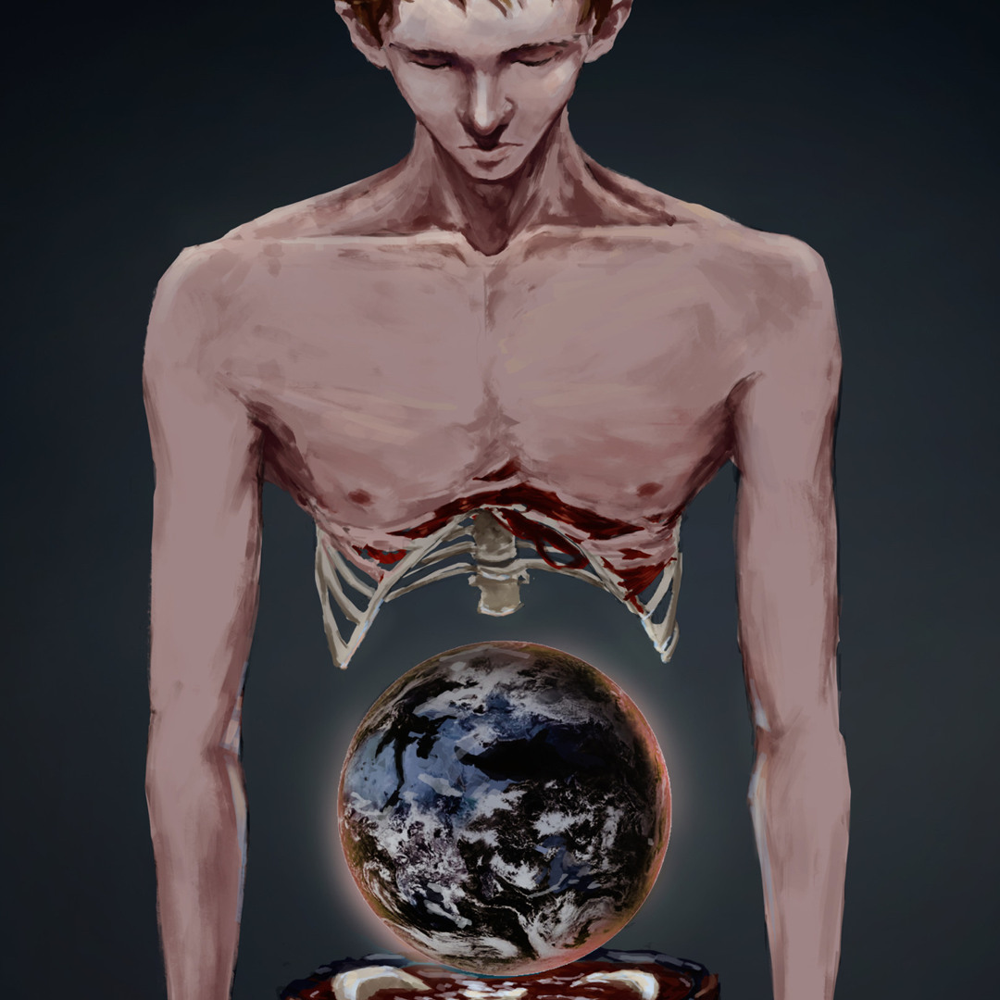

This is the third page, in this page, it contains a gallery of SCPs.
SCP-002: The "Living" Room
SCP-002 is to be remained contained to a suitable power supply at all times, to keep this anomaly in it's recharging mode.
It's class is Euclid.

SCP-003: Biological Motherboard
SCP-003 is to be maintained at a constant temperature between 35-100°C. No living multi cell organisms of Category IV or higher complexity is allowed to come into contact with SCP 003.
It's class is Euclid.
 SCP-004: The 12 Rusty Keys and the Door
SCP-004: The 12 Rusty Keys and the Door
When handling items SCP-004-2 through SCP-004-13, proper procedure is vital. The items are not permitted to be moved off-site unless accompanied by two Level 4 security personal.
It's class is Euclid.
SCP-005: Skeleton Key
SCP-005 poses no immediate threat in any direct sense. Even so, it's unique functions require special measures be taken to restrict access and manipulation of the object.
It's class is Safe.
SCP-006: Fountain of Youth
Whereas the nature of SCP-006 does not warrant any extensive containment, a certain level of secrecy is necessary regarding the object's existence and properties, for obvious reasons. The following procedures are required not for personnel safety, but to deny or hide knowledge of SCP-006's effects from the personnel who interact with it.
It's class is Safe.

SCP-007: Abdominal Planet
SCP-007 is to be contained in a sealed room measuring 10 m on each side. Room is to be furnished comfortably as a living area, along with whatever items are requested by ███████████████ (hereafter referred to as Subject), given that providing Subject with requested items would not compromise security. Subject is not to be allowed to leave the room, and is to be detained with force if necessary.
It's class is Euclid.